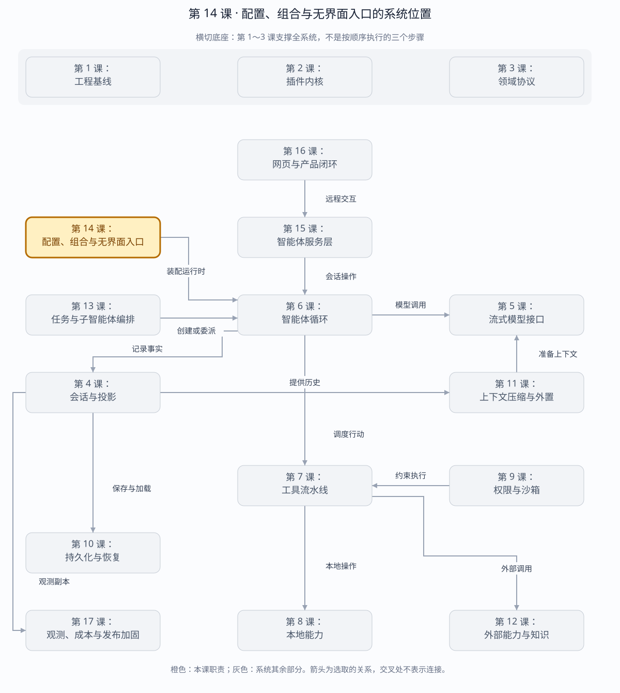

第 14 课：Profile、Bundle、CLI 与 Headless Host
同一套 Runtime 不应为 CLI、测试和未来 Web Server 各装配一次。本课建立稳定 composition root：Profile 决定部署数据，Bundle 决定插件图，Host 提供用例 API，CLI 只翻译进程协议。
章节概览（可选）：三框架职责摘要
本章对比：DeepSeek Harness / DeepAgents / OpenHands
口径：DeepSeek 依据本地原仓库（99f6f02fecdb），不是 harness-lab；deepagent 按 LangChain DeepAgents 理解；OpenHands 对比当前 Software Agent SDK，不混用旧 V0。在线资料核对于 2026-08-28，描述文档能力，不代表已在本实验室安装或测试。没有依据的同名能力不强行等同。
三者的关键区别：应对比“配置了什么对象”，而不是按 Profile、Host、Bundle 等名字建立一一对应关系。（基于上述依据的归纳）
本章在全系统中的位置
运行前的装配入口，决定模型、工具、策略和宿主组合。
下面是本课程的概念地图，不是某框架的逐包调用图，也不表示实验室已默认装配全部能力。三套框架的实际对应关系见上方横向对比表。
全系统定位 · 橙色高亮第 14 课
打开大图 · Mermaid 图源
| 上游与输入 | 命令行任务、Profile、Bundle 与环境配置。 |
|---|
| 下游与输出 | 可运行的服务图和任务入口，交给循环或远程宿主。 |
|---|
| 不归本章负责 | 无界面运行不等于启动 HTTP 服务；名字都叫 Profile 也不一定配置同一层。 |
|---|
| 放进具体场景 | 同一套核心能力可由命令行跑一次任务，也可被长期服务托管，但端口、资源释放和退出码各有所有者。 |
|---|
接着看下方「可视化图解」：局部模块图解释职责，时序图解释一次调用，分支图解释异常与边界。
本课导览
| 包含内容 | 分层配置、插件包装配、无界面宿主、命令行协议、会话创建与恢复。 |
|---|
| 涉及模块 | HarnessProfile、HarnessBundle、HeadlessHost、CLI 解析器和进程入口。 |
|---|
| 白话解释 | 把所有零件集中在一个装配入口接好，命令行只负责把参数和输入翻译成宿主调用。 |
|---|
| 解决的问题 | 避免 CLI、测试和服务端各自复制一套初始化逻辑，确保不同产品入口共享相同运行和恢复语义。 |
|---|
点击下面的概念名称，可直达该概念的三框架实现、区别与依据。原有能力清单、示例和验收描述面向 harness-lab 教学实现；不要将其直接当作上游框架能力声明。
完整能力清单
| 能力域 | 完整能力 | 边界 |
|---|
| 配置合并 | 默认值、配置文件、环境变量和命令行覆盖按固定优先级合并。 | 未知字段、无效枚举和缺少必填配置立即失败。 |
| 配置模型 | 模型提供方、模型、持久化根目录、工作目录、密钥环境名、基础地址、系统提示和沙箱策略。 | 脚本模型必须提供脚本响应。 |
| 插件包 | 按顺序应用插件组成运行时，持有统一释放边界。 | 某插件失败时逆序回滚此前插件。 |
| 宿主装配 | 创建存储、模型运行时、插件上下文和交互中介器，并选择真实或覆盖提供方。 | 所有产品面复用同一装配根。 |
| 会话用例 | 创建新会话、恢复旧会话、发送消息、运行轮次、取消和关闭刷盘。 | 对外暴露用例对象，不泄露内部智能体。 |
| 命令行 | 支持单次任务、交互输入、JSONL 输出、创建或恢复会话、配置覆盖和中断信号。 | 参数错误与运行错误映射为明确退出码。 |
| 独立进程恢复 | 一个 CLI 进程创建会话，另一个进程从磁盘恢复并继续连续轮次。 | 证明恢复不依赖同进程内存。 |
主概念深挖：组合根与无界面宿主
Headless Host 位于部署配置和插件包的下游、CLI、Agent Server 与测试的上游，是所有产品入口共享的唯一装配根。
默认值 → 配置文件 → 环境变量 → CLI 覆盖（输入）
│ validate Profile
▼
HeadlessHost.open
┌────────────┼────────────┐
▼ ▼ ▼
SessionStore LlmRuntime HarnessBundle
└────────────┼────────────┘
▼
Conversation 用例 API（输出）
┌────────┼────────┐
▼ ▼ ▼
CLI Agent Server Tests（下游）
| 背景与目的 | 如果 CLI、服务端和测试分别初始化存储、模型与插件，它们会悄悄形成不同语义，恢复和释放问题难以复现。 |
|---|
| 输入与输出 | 输入是分层 Profile、可选提供方覆盖和交互中介器；输出是创建/恢复会话、运行/取消轮次及关闭释放的用例接口。 |
|---|
| 适用场景 | 命令行工具、后台服务、集成测试、嵌入式 SDK 和本地演示。 |
|---|
| 底层组件 | 严格配置解析器、固定覆盖优先级、HarnessBundle、JSONL 存储、LlmRuntime、HeadlessConversation 和信号处理。 |
|---|
| 核心逻辑 | Profile 只描述部署数据，Bundle 只描述插件图，Host 负责实例化与所有权，CLI 只翻译 argv/stdin/stdout，不复制领域逻辑。 |
|---|
| 权衡 | 统一组合根减少入口自由度，却防止配置漂移和生命周期分叉；严格拒绝未知字段会降低向前兼容的宽松度。 |
|---|
| 方案对比 | 框架式全局容器方便自动注入但隐藏装配顺序；显式组合根代码更直白，适合调试和证明资源所有权。 |
|---|
场景穷举
启动产品入口
├─ 默认配置 → 校验 → 新建会话
├─ 文件+env+CLI → 固定优先级覆盖
├─ 未知字段/坏枚举 → 装配前失败
├─ Bundle 第 N 个插件失败 → 逆序回滚 1..N-1
├─ --session → 创建并持久化
├─ --resume → 冷恢复并继续
├─ --interactive → 同一会话逐行运行
├─ SIGINT → 取消当前轮次
└─ close → 刷盘、卸载、退出码
| 场景 | 输入来源 | 宿主行为 |
|---|
| 本地开发 | Profile 文件+环境密钥。 | 创建真实提供方和工作区会话。 |
| 离线测试 | 脚本提供方覆盖。 | 不访问网络，复用同一 Host 语义。 |
| 跨进程恢复 | 新进程仅提供 session id。 | 从持久化根重建，不依赖旧 Agent 对象。 |
| 配置冲突 | 文件、env、CLI 同时给模型。 | CLI 胜出，并可通过 dump/config 证据解释。 |
| 关闭竞态 | 轮次仍运行时收到退出。 | 先取消运行，再刷盘并释放 Bundle。 |
多方案对比
| 装配方式 | 透明度 | 一致性 | 代价 |
|---|
| 每个入口手写初始化 | 局部直观。 | 低，容易漂移。 | 重复代码和恢复差异。 |
| 全局自动注入框架 | 低，依赖隐式。 | 高。 | 调试装配顺序困难。 |
| 显式 Headless 组合根 | 高。 | 高，入口只翻译协议。 | 构造参数和工厂代码较多。 |
| 外部依赖注入配置 | 取决于工具。 | 高且可替换。 | 引入额外 DSL 和运行时。 |
关键设计反问
- 为什么 Profile 不直接创建对象？
- Profile 应是可校验、可打印的部署数据；若混入对象工厂，就无法通过 JSON 配置、比较或安全输出。
- 为什么 CLI 不直接操作 HarnessAgent？
- 那会复制存储、恢复和释放逻辑；CLI 应只依赖稳定用例 API，使服务端和测试共享同一语义。
- 未知配置字段为什么要拒绝？
- 宽松忽略会把拼写错误变成静默使用默认值，尤其可能导致错误模型、目录或沙箱策略。
四层边界
CLI argv/stdin/stdout/SIGINT
│ 翻译
▼
HeadlessHost.create | resume | conversation.run | dispose
│
▼
Bundle: profile → session-store → llm-provider → runtime plugins
│
▼
Profile: JSON file < environment < CLI overrides
| 层 | 负责 | 不负责 |
|---|
| Profile | 模型、路径、权限默认值、部署选择 | live service 或 API key 值 |
| Bundle | 有序 mount、失败回滚、逆序 dispose | 用户任务 |
| Headless Host | Session/Agent 生命周期与持久化屏障 | argv 与终端格式 |
| CLI | 参数、JSONL/文本输出、stdin、退出码、SIGINT | 直接构造 Agent 内部组件 |
插件包：三框架分别怎么做？
同一个问题：一个插件包到底装配哪些东西？
这个概念的区别：分发包、配置注册和运行时资源装配都叫“插件”，但失败回滚与释放责任不能据名称互推。
宿主装配：三框架分别怎么做？
同一个问题：无界面运行必须经过一个 HTTP Host 吗？
这个概念的区别：无界面是交互方式，不代表网络服务；图中应将应用组合根与远程服务层分开。
命令行：三框架分别怎么做？
同一个问题：一次性任务入口何时输出并退出？
这个概念的区别：本课交互输入和 JSONL 输出是实验室入口能力，不应直接归给三套框架的所有命令行产品。
配置规则
profile.json
provider/model/persistenceRoot/cwd/apiKeyEnv/...
↓ strict unknown-field validation
DSH_LAB_MODEL / DSH_LAB_SANDBOX / ...
↓ same schema
--model / --provider / --sandbox
↓ same schema
immutable resolved profile
Profile 只保存环境变量名，不保存 secret 值。DeepSeek Provider 每次请求读取 process.env[apiKeyEnv]，支持轮换，也避免密钥进入 Session Event、Profile 快照或调试输出。
配置合并：三框架分别怎么做？
同一个问题：多个来源给出同一设置时，实际按什么规则合并？
这个概念的区别：合并与迁移是不同问题；覆盖顺序还不足以说明集合、嵌套对象和未知字段的行为。
配置模型：三框架分别怎么做？
同一个问题：配置描述整个应用，还是只描述模型与 Agent？
这个概念的区别：先明确配置对象覆盖范围，再决定哪些字段可保存、哪些资源必须重新创建。
Headless 恢复路径
process A: --session stable task-1
create → Agent turn 1 → flush/fsync → close/dispose
process B: --resume stable task-2
checksum/repair → Session replay → Agent nextTurn=2
→ flush/fsync → close/dispose
独立进程测试验证了这条路径；它不是同一进程里复用内存对象的“伪恢复”。
会话用例：三框架分别怎么做？
同一个问题：创建、发送与恢复由哪个公开对象承接？
这个概念的区别：迁移入口时映射用例而不是类名：发新消息、继续暂停与重建进程内对象不能混成一个 resume。
独立进程恢复：三框架分别怎么做？
同一个问题：旧进程退出后，新进程究竟从哪里拿回状态？
这个概念的区别：验收必须启动第二个进程并读取持久数据；同进程继续调用只能证明对象还活着。
运行与调试
cd harness-lab
bun run demo:headless
VS Code F5 → 13 · 无界面命令行
bun run cli -- --profile ./profile.json --session demo "分析代码"
bun run cli -- --profile ./profile.json --resume demo --json "继续"
bun run cli -- --profile ./profile.json --interactive
# 推荐断点
# loadProfile / validateProfile：覆盖与诊断
# HarnessBundle.mount：row mount 与回滚
# HeadlessHost.create/resume：composition root
# HeadlessConversation.run：turn + flush durability
# runCli：进程协议与 finally shutdown
源码
下一课实现 Agent Server：RPC envelope、连接/订阅、幂等命令、背压、鉴权与多 Session 路由。
返回完整路线 →